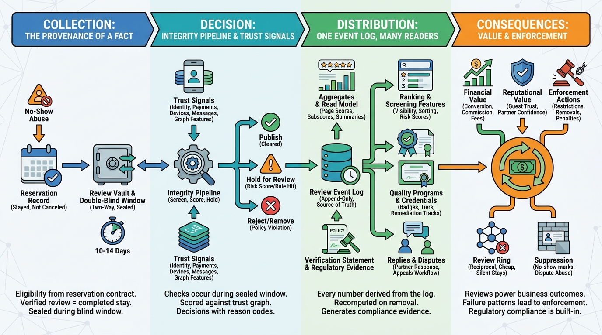

Part VII — TRUST: Making Strangers Safe to Stay With
Trustworthy Reviews: Collection, Integrity and Quality Operations

Image generated by Google Gemini (gemini-3-pro-image-preview)
Part VII — TRUST: Making Strangers Safe to Stay With

Image generated by Google Gemini (gemini-3-pro-image-preview)